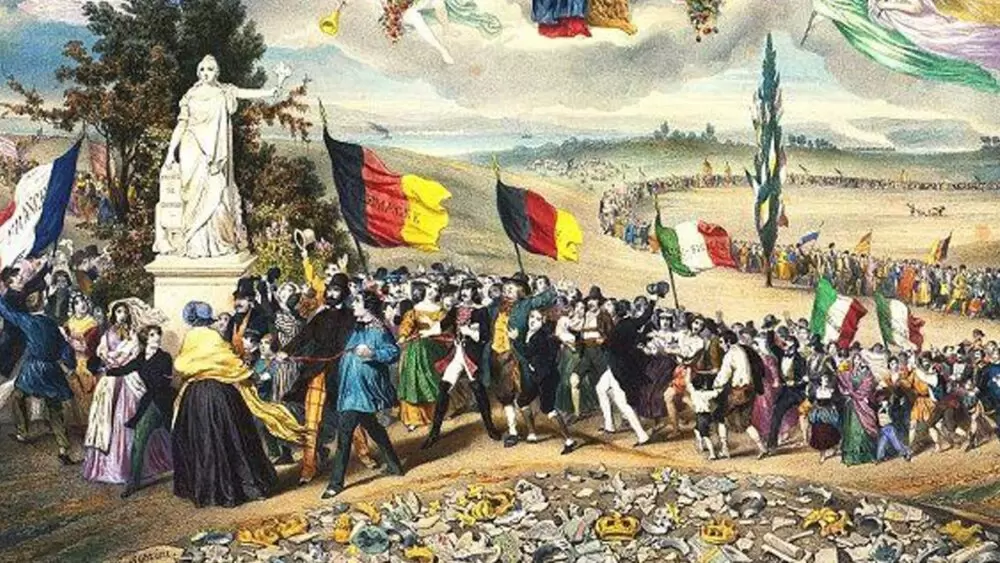
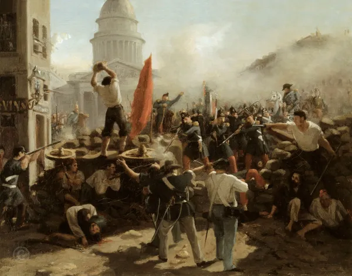

Contexto Histórico
A derrota de Napoleão Bonaparte em 1815 representou não somente o fim da expansão francesa pelo continente europeu, mas também a restauração das monarquias que haviam sido derrotadas pelo exército napoleônico. O Congresso de Viena reuniu esses monarcas, que voltaram ao poder para discutir o desenho do mapa europeu depois da Revolução Francesa e da Era Napoleônica.
Enquanto as monarquias restauravam seus domínios, os ideais revolucionários, contrários à ordem que estava sendo instalada na Europa, ganharam força e se espalharam por todo o continente. Desde o iluminismo, no século XVIII, as ideias liberais já eram discutidas.
A formação de um governo democrático e constitucional bem como a liberdade dos indivíduos e a não intervenção do Estado na economia, principais princípios do liberalismo, já eram ideias que povoavam as mentes dos intelectuais europeus e que motivaram eventos importantes da época, como a Independência dos Estados Unidos (1776) e a Revolução Francesa.
O antiabsolutismo voltou a agitar as mentes revolucionárias em meados do século XIX por conta da restauração monárquica que se consolidou no Congresso de Viena. Os monarcas absolutistas tentavam restaurar o seu poder soberano, mas encontraram resistências para a sua execução tanto na Europa como na América, continente que, segundo esses restauradores, deveria permanecer colônia europeia.
Os Estados Unidos mostraram sua força ao impedirem qualquer interferência europeia na reconquista das colônias por meio da Doutrina Monroe, simbolizada pelo lema “América para os americanos”.
No campo econômico, a Europa também atravessava um período de transformação. A Revolução Industrial, que começou na Inglaterra, em meados do século XVIII, iniciava sua segunda fase, expandindo para outras nações europeias o processo de industrialização.
Os trabalhadores do campo tiveram que abandonar suas terras por conta do avanço do latifúndio e se dirigiram para as cidades em busca de trabalho nas indústrias recém-instaladas. O capitalismo se consolidava como modo de produção dominante. As nações europeias beneficiadas pelo desenvolvimento econômico após a industrialização avançavam seus domínios sobre os continentes africano e asiático, em busca de metais preciosos, mercado consumidor e matéria-prima.
Apesar de a econômica estar em franco desenvolvimento e expansão, a realidade europeia no campo social não tinha avançado na mesma intensidade. A segunda fase da Revolução Industrial mostrou a desigualdade social e o aumento da pobreza como graves problemas e que poderiam gerar revoltas e conflitos armados.
Karl Marx e Friedrich Engels, economistas alemães, publicaram o livro Manifesto do Partido Comunista, analisando criticamente o sistema capitalista e convocando os trabalhadores do mundo inteiro a se unirem contra a situação precária vivida por eles. Os ideais marxistas se espalharam por toda a Europa, e os problemas sociais se tornaram motivações para que os trabalhadores se organizassem e reagissem àquela situação pelo uso das armas. Ao contrário do liberalismo, o marxismo se tornou popular na camada mais pobre da Europa.
Outro ideal que repercutiu bastante na metade do século XIX foi o nacionalismo. O nacionalismo foi um dos principais motivadores para o início do processo das unificações italiana e alemã. As duas regiões reuniam diversos reinos com povos diferentes, mas esse ideal nacional conseguiu convergi-las em busca da unificação. Com o surgimento da Itália e da Alemanha como nações, as grandes potências europeias Inglaterra, França e Bélgica ganhavam novos adversários tanto no continente europeu como na disputa pelas riquezas da Ásia e da África.
O contexto histórico da Primavera dos Povos foi marcado pelas disputas de domínio entre as nações europeias, mas também por ideias que uniam grupos políticos, trabalhadores e camponeses que estavam dispostos a pegar em armas pela concretização de suas ideias.
Objetivo da Primavera dos Povos
O ano de 1848 foi marcado em toda a Europa por diversas manifestações populares e movimentos revolucionários, que contestavam as ações repressoras do Estado. A população mais pobre ergueu barricadas nas ruas para lutar contra a miséria e a opressão por ela vivida.
Naquela época, a Europa atravessava uma crise econômica. A produção agrícola foi afetada por pragas e a seca, destruindo plantações e levando os camponeses para as ruas exigindo melhores condições de vida. Outro grupo que também se manifestou contrário à situação degradante que vivia foi o dos trabalhadores urbanos. As fábricas não lhes garantiram nenhum direito trabalhista, e as péssimas condições de trabalho os levaram também às ruas para manifestarem.
Quem estava nas barricadas tinha em mente a conquista do poder. Os ideais marxistas foram a principal motivação dos participantes da Primavera de Praga a se unirem contra a burguesia e seus representantes que estavam no poder e, segundo eles, teriam permitido ou se beneficiado economicamente daquela situação precária por eles vivida.
Países envolvidos
A Primavera dos Povos aconteceu em vários países da Europa. Pode-se destacar:
Itália: na península Itálica, em 1848, os movimentos revolucionários tentaram unificar os reinos, porém foram derrotados. A Itália ficou sob domínio da França e da Áustria até 1861, quando de fato a unificação aconteceu.
Hungria:tal qual na Itália, os ideais nacionalistas avançaram pela Hungria. No começo de 1848, o governo austríaco tornou o país independente, mas a Áustria invadiu o território e desfez o governo e suas ações independentes.
Alemanha: ao mesmo tempo que acontecia a industrialização, revoltas operárias se espalhavam por toda parte. Apesar de as ideias nacionalistas também avançarem entre os alemães, pouco resultado foi obtido em busca da tão sonhada unificação.
França: as revoltas sociais fizeram com que o rei Luís Filipe abdicasse do trono em 1848, mas não diminuíram a crise social. A república foi proclamada, mas Carlos Luís Napoleão Bonaparte deu um golpe e se tornou imperador Napoleão III.
Áustria: as rebeliões contra a monarquia austríaca se espalharam pelo território e, em novembro de 1848, o rei austríaco abdicou do trono.
Nota-se que, apesar da restauração monárquica após o Congresso de Viena, as revoltas populares conseguiram desestabilizar a situação política da época. Os ideais marxistas e nacionalistas reforçaram união de grupos contrários aos monarcas para lutar contra essa situação.
Consequências:
A volta das monarquias absolutistas ao poder representou a consolidação da burguesia como classe social dominante, porém a forte resistência vinda da classe mais pobre demonstrou a aceitação desse grupo dos ideais marxistas de tomada de poder pelos trabalhadores. Esses ideais foram debatidos, e a união das forças trabalhistas contra o sistema capitalista se tornou prioridade.
As Internacionais Socialistas, movimentos em defesa dos trabalhadores, espalharam-se pela Europa, divulgando as ideias de Marx e Engels bem como mantendo a reação prática daqueles que eram oprimidos pelo sistema capitalista.
Outra consequência da Primavera do Povos foi a unificação da Itália e da Alemanha. Se, em 1848, grupos nacionalistas tentaram se rebelar contra as monarquias e impérios, nos anos seguintes, esses grupos continuariam lutando por esses objetivos até que, de fato, os conseguissem. Apesar de as revoltas de 1848 terem sido derrotadas, as monarquias absolutistas demonstraram que não tinham forças políticas, sociais e econômicas para se manterem no poder.
Resumo
Foi uma série de conflitos na Europa em 1848 e que foram influenciados pelos ideais marxista, liberal e nacionalista.
A restauração da monarquia após o fim da Era Napoleônica bem como a desigualdade social promovida pela expansão da indústria provocaram uma série de rebeliões na Europa.
As unificações da Alemanha e da Itália foram influenciadas pela Primavera dos Povos.
Refêrencias:
HIGA, Carlos César. Primavera dos Povos: contexto e objetivos. Mundo Educação. Disponível em: "https://mundoeducacao.uol.com.br/historiageral/primavera-dos-povos.htm">
REALIZE Educação. Primavera dos Povos. Disponível em:"https://realizeeducacao.com.br/wiki/primavera-dos-povos/">